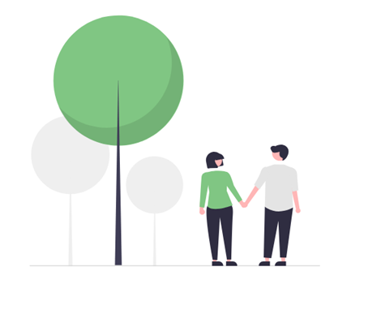

Servicios
A través de nuestras tres unidades de atención, ofrecemos una amplia variedad de servicios en salud mental y acompañamiento, adaptados a distintas necesidades y momentos de la vida.
Servicios de la Unidad de Asistencia Psicológica
Terapia psicológica individual
Espacio terapéutico personalizado orientado a trabajar dificultades emocionales, conductuales y vinculares, como ansiedad, estrés, depresión, crisis vitales o conflictos en las relaciones. Cada proceso comienza con una evaluación inicial que permite definir objetivos claros y construir, junto al paciente, un plan de trabajo acorde a sus necesidades y su momento de vida.
El abordaje principal se basa en la terapia cognitivo-conductual, un enfoque respaldado por amplia evidencia científica que permite identificar patrones de pensamiento, emociones y conductas que generan malestar, y desarrollar herramientas concretas para modificarlos. Este enfoque orientado a objetivos facilita que el paciente pueda observar avances progresivos y construir recursos duraderos para afrontar situaciones futuras.
La modalidad virtual amplía el acceso a la atención psicológica, permitiendo iniciar o sostener un proceso terapéutico desde cualquier lugar, con mayor flexibilidad horaria y continuidad incluso ante cambios de rutina, viajes o distancia geográfica.
Nuestro equipo está integrado por profesionales de la salud mental con formación clínica y experiencia en distintos ámbitos de intervención , que trabajan desde una perspectiva respetuosa, empática y basada en la evidencia. El objetivo es ofrecer un espacio seguro y confiable donde cada persona pueda comprender su experiencia, fortalecer sus recursos personales y avanzar hacia un mayor bienestar emocional.
Asesoramiento Digital con Inteligencia Artificial (opcional)
Para quienes lo deseen, ofrecemos un programa optativo de asesoramiento digital que incorpora herramientas de Inteligencia Artificial (IA) y aplicaciones especializadas para potenciar el proceso terapéutico. Este servicio tiene una tarifa diferencial y se utiliza siempre como complemento del trabajo clínico, nunca como reemplazo del terapeuta.
La IA permite fortalecer el análisis clínico, ayudando a que el terapeuta y el paciente puedan concentrarse en lo más importante: comprender emociones, profundizar en el proceso y avanzar en los objetivos personales.
Durante el tratamiento, terapeuta y paciente definen juntos metas de desarrollo personal y seguimiento de avances. A través de aplicaciones de apoyo terapéutico, el paciente puede registrar aspectos relevantes de su experiencia cotidiana —como estados de ánimo, situaciones significativas o reacciones emocionales— que luego pueden ser analizados como parte del proceso clínico. Las herramientas de IA colaboran en la organización y lectura de esta información, identificando patrones emocionales o temas recurrentes que ayudan a abordar el proceso terapéutico de manera más clara y directa.
Esto permite:
- Detectar patrones emocionales con mayor precisión.
- Seguimiento continuo entre sesiones.
- Mejor control de avances terapéuticos.
- Optimización del tiempo clínico.
Es importante destacar que la IA funciona exclusivamente como herramienta de apoyo profesional. Las decisiones terapéuticas, la interpretación clínica y el vínculo humano siguen siendo responsabilidad del terapeuta.
El uso de estas herramientas se realiza bajo estrictos protocolos de confidencialidad y protección de datos, diseñados para resguardar la identidad y privacidad del paciente.
Nuestro objetivo es integrar la innovación tecnológica con el cuidado humano para ofrecer un proceso terapéutico más preciso, personalizado y efectivo, siempre respetando el ritmo y las necesidades de cada persona.
Acompañamiento en la Crianza
Asistencia para madres, padres y cuidadores
Criar no siempre es fácil, y no hay un único camino. Por eso desarrollamos un servicio de acompañamiento en la crianza, pensado para brindar orientación profesional, contención y herramientas prácticas a madres, padres y cuidadores desde el embarazo hasta la adolescencia.
Ofrecemos espacios individuales, para parejas y grupos, donde es posible compartir experiencias, despejar dudas y encontrar nuevas estrategias para acompañar el desarrollo emocional y social de niños y adolescentes.
Nuestro enfoque combina psicología perinatal, desarrollo infantil y acompañamiento familiar, con una mirada basada en la evidencia y centrada en el bienestar de la familia. Podés participar de encuentros online, accesibles desde cualquier lugar, guiados por profesionales especializados.
Grupos de acompañamiento según etapa
- Embarazo y primeros meses
- Psicología perinatal y llegada del bebé
- Espacios para transitar el embarazo, el posparto y los primeros meses de crianza con apoyo emocional y orientación profesional.
- Temas frecuentes: vínculo temprano, cambios emocionales, adaptación familiar, lactancia y cuidados iniciales.
Creemos que criar también es un proceso de aprendizaje y crecimiento continuo. Por eso ofrecemos distintos espacios de acompañamiento organizados según las etapas del desarrollo y las necesidades de cada familia.
Primera infancia (0 a 5 años)
Crianza en los primeros años
- Grupos para madres, padres y cuidadores de bebés y niños pequeños.
- Trabajamos sobre rutinas, establecimiento de límites, desarrollo emocional, sueño, alimentación y adaptación al jardín de infantes.
Edad escolar (6 a 12 años)
Acompañar el crecimiento
- Orientación para abordar los desafíos propios de esta etapa del desarrollo.
- Se trabajan temas como aprendizaje, socialización, autonomía, uso de pantallas, regulación emocional y convivencia familiar.
Crianza en contextos de discapacidad
Acompañamiento especializado para familias
- Espacios de apoyo y orientación para madres, padres y cuidadores de niños y adolescentes con discapacidad o necesidades especiales.
- Se trabajan estrategias de acompañamiento emocional, articulación con la escuela y fortalecimiento de redes de apoyo familiares y comunitarias.
Adolescencia
Entender y acompañar esta etapa
- Encuentros para madres y padres que desean comprender mejor los cambios propios de la adolescencia.
- Abordamos temas como comunicación familiar, autonomía, establecimiento de límites, salud mental, redes sociales y construcción de identidad.
Espacios para madres y padres
Grupos de apoyo y reflexión
- Encuentros grupales donde compartir experiencias de crianza, escuchar otras miradas y construir recursos en comunidad.
Creemos que criar también es un proceso de aprendizaje. Nuestro objetivo es ofrecer un espacio seguro, respetuoso y profesional para acompañarte en cada etapa de la vida familiar.
Servicios de la Unidad de Acompañamiento Terapéutico
Acompañamiento Terapéutico para Jóvenes y Adultos (SAT18+)
Acompañamiento terapéutico para personas mayores de 18 años que atraviesan dificultades emocionales, psicológicas o sociales. Brindamos apoyo en la vida cotidiana para favorecer el bienestar, la autonomía y la integración social, en el hogar o en otros espacios significativos.
- Plan de trabajo personalizado con evaluación inicial.
- Acompañamiento en crisis vitales, trastornos mentales, enfermedades crónicas.
- Supervisión profesional permanente.
Acompañamiento Domiciliario para Niños y Adolescentes (SADENA)
Servicio terapéutico destinado a niños y adolescentes que requieren apoyo especializado en su entorno familiar. Trabajamos de manera articulada con la familia y el equipo de salud para favorecer el desarrollo emocional, social y conductual. Incluye:
- Acompañamiento terapéutico en el hogar.
- ATS especializadas en niñez y adolescencia.
- Objetivos terapéuticos claros y trabajo en equipo.
Integración Escolar para Personas con Discapacidad (SIED)
Servicio integral que acompaña el proceso de inclusión escolar de niños y adolescentes con discapacidad. Articulamos escuela, familia y profesionales de la salud para garantizar una integración efectiva y sostenida. Incluye:
- Plan de trabajo personalizado.
- Selección y supervisión del asistente externo.
- Comunicación permanente con la institución.
Medicación a Domicilio
Administración de medicamentos en el hogar, con enfermeros profesionales y control de signos.
- Plan de cuidados personalizado.
- Control cardíaco, respiratorio y de temperatura.
- Atención continua durante todo el año.
Cuidados Domiciliarios y Asistencia Personal (CD)
Servicio de cuidado integral en el hogar para personas que han perdido parte de su autonomía por edad, enfermedad o discapacidad. Incluye:
- Apoyo en higiene, alimentación y movilidad.
- Estimulación emocional y compañía.
- Atención especializada para adultos mayores.
Cuidados Temporarios (SECUT)
Servicio flexible de cuidado por períodos cortos, adaptado a situaciones específicas.
- Cobertura de turnos internacionales o nacionales.
- Acompañamiento a estudios médicos y actividades recreativas.
- Contratación por horas, días o semanas.
Acompañamiento Terapéutico en Salud Mental y Adicciones (SATA)
Programa de recuperación, reinserción social y fortalecimiento de recursos personales.
- Equipo interdisciplinario (psicólogos, psiquiatras, ATS).
- Articulación con familia y red de tratamiento.
- Plan terapéutico flexible y supervisión continua.

Servicios de la Unidad Psicoeducativa
Talleres de Educación Emocional
Espacios grupales participativos orientados a desarrollar habilidades emocionales, mejorar el autoconocimiento y fortalecer estrategias de afrontamiento frente a situaciones de estrés, enfermedad o cambios vitales.
Encuentros reflexivos y grupos de apoyo
Propuestas grupales que facilitan la escucha, el intercambio de experiencias y la construcción de redes de apoyo, favoreciendo el bienestar emocional y la sensación de pertenencia.
Programas de Bienestar Psicofísico
Programas estructurados que integran salud mental, educación emocional y cuidado del cuerpo, dirigidos a personas que atraviesan condiciones de salud psicofísica de curso prolongado.
Programas de Salud Mental para Empresas, Sindicatos y Organizaciones
Intervenciones diseñadas a medida para contextos institucionales, orientadas a la prevención, el cuidado de la salud mental y el fortalecimiento de equipos de trabajo.
Bienestar Ocupacional
Acciones enfocadas en la prevención del estrés laboral, el agotamiento emocional y el síndrome de burnout, promoviendo entornos de trabajo más saludables, sostenibles y humanos.
Apoyo Psicoeducativo a Instituciones Educativas
Servicios de acompañamiento y orientación para instituciones educativas, docentes y equipos directivos, con foco en el bienestar emocional, la convivencia y la prevención de problemáticas psicosociales.